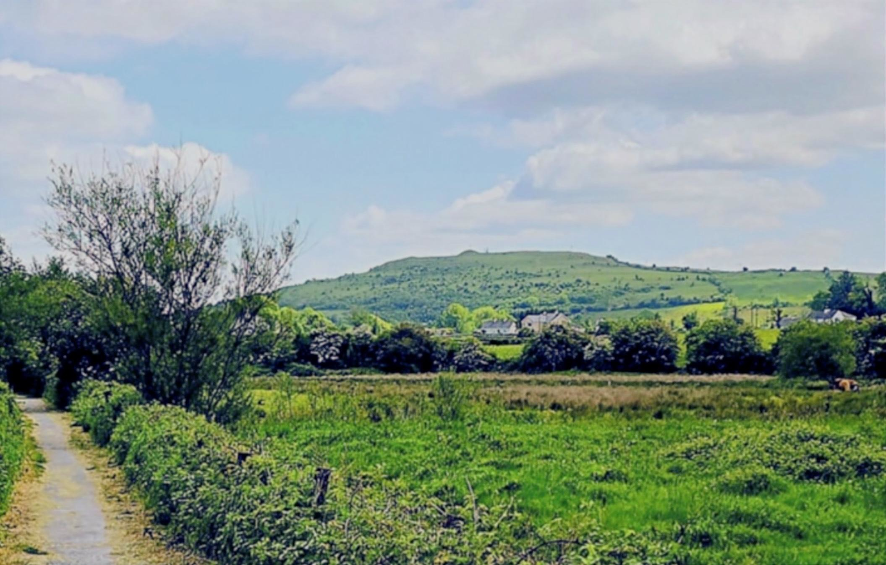
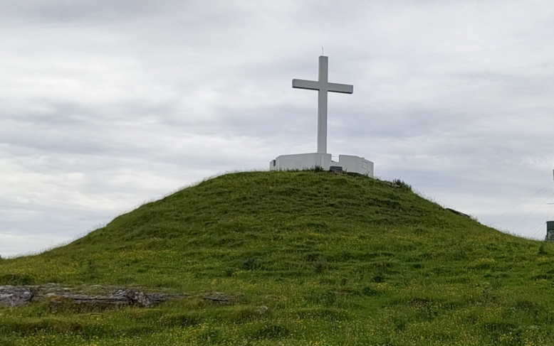
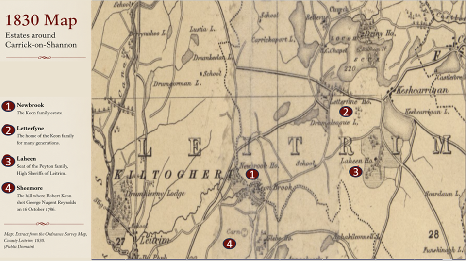

THE TRUTH OF SHEEMORE
Sheemor, the Great Fairy Mound, is a limestone hill near Leitrim Village, a hard remnant too tough for glaciers to erase. Legend says two warring fairy tribes once clashed here, their epic battle remembered in the thunderous noise that echoed between the sidhes.

Looking towards Sheemore across the fields of County Leitrim.

Sheemore Cross. The hill has long been associated with local folklore and the traditions of the fairy hill.

An 1830 map showing Newbrook, Letterfyne, Laheen and Sheemore.